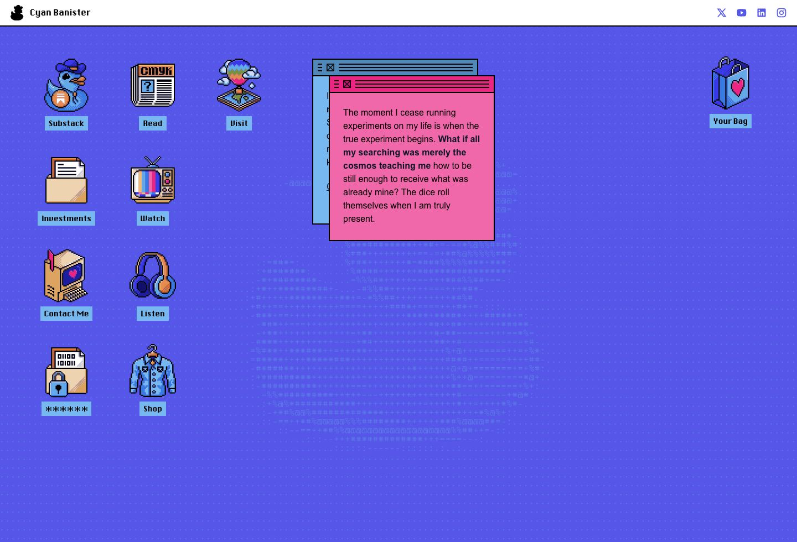
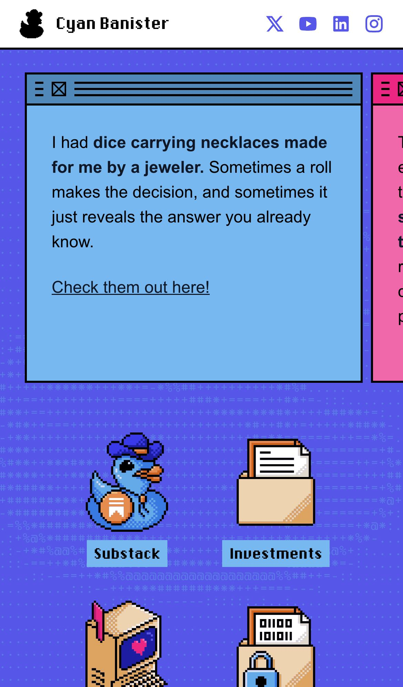

Personal site with internet-native attitude, asymmetrical pacing, and a strong anti-template energy that feels more like a live artifact than a portfolio shell.
appleGaramond
appleGaramond Fallback
chicago
chicago Fallback
JetBrains Mono
JetBrains Mono Fallback
portfolio · typography · playful

